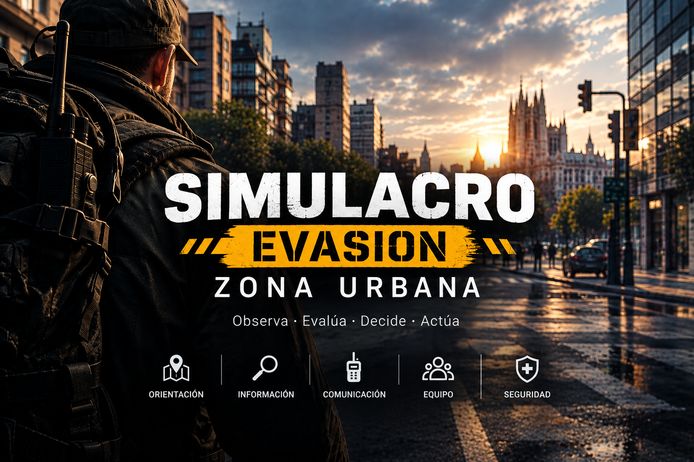
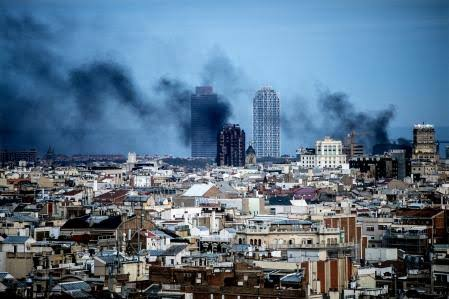
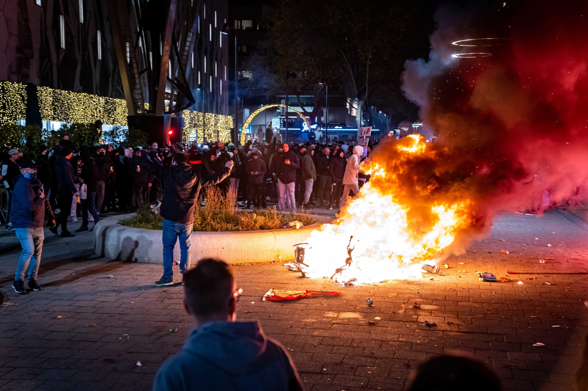
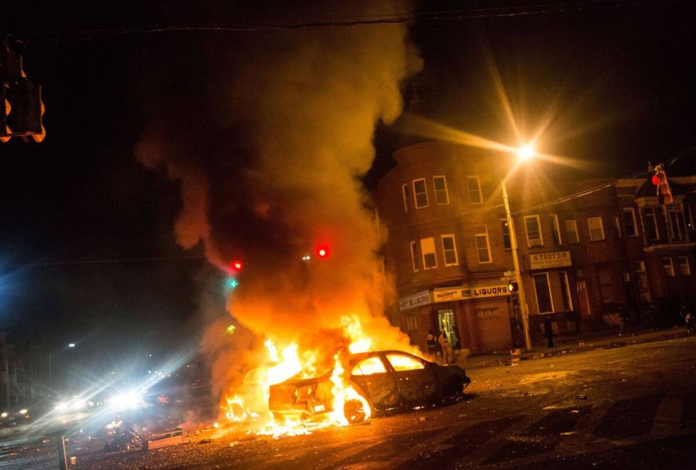

⚠️ No se pudo cargar img_curso.pngBienvenido al ejercicio de entrenamiento. El objetivo es evaluar la toma de decisiones, la velocidad de reacción y la capacidad de observación bajo estrés.

⚠️ contexto_0.jpg no encontradaLos disturbios de la semana pasada han desencadenado en una oleada de violencia sin precedentes. La policía local y los Mossos d'Esquadra están desbordados, y se ha movilizado al ejército para contener batallas campales en el centro de la ciudad.
Los barrios colindantes y los suburbios están desprotegidos, sufriendo actos vandálicos y saqueos en comercios y viviendas. Se ha suspendido la actividad académica y la cadena de suministro se ha roto, provocando escasez de productos básicos. Si no se revierte la situación, es inminente el confinamiento militar de la población civil.
Tu barrio, una zona residencial habitualmente tranquila, ya no es seguro. Hace dos días asaltaron dos pisos con sus inquilinos dentro en tu misma calle. Los vecinos han establecido turnos de vigilancia, pero los enfrentamientos con grupos de pillaje son cada vez más frecuentes.

⚠️ contexto_1.jpg no encontradaA primera hora de la mañana tomas una decisión. Llenas el maletero del coche con garrafas de agua, comida, ropa y equipo sanitario. Como sois seis en la familia y el coche va cargado, metes a tu mujer, tus dos hijos y tus padres en el vehículo de cinco plazas para que evacúen hacia vuestra segunda residencia en la montaña, una zona aislada y con recursos. Tú te quedas asegurando la casa, con el plan de reunirte con ellos en los próximos días usando el transporte público.
Acordáis comunicaros por radio debido a los cortes telefónicos. Si la situación se vuelve crítica y te ves obligado a abandonar el hogar, activaréis el protocolo de emergencia 3-3-3: canal 3, cada 3 horas, 3 minutos de transmisión.
Al mediodía, el chirrido de la estática rompe el silencio. Es tu mujer. Han llegado al destino, pero han tardado el triple de lo normal. Con voz temblorosa, te informa de que en los controles de carretera grupos armados —no sabe distinguir si militares o saqueadores— están registrando vehículos y confiscando provisiones.
Una hora después, las noticias confirman el peor escenario: el ejército ha bloqueado todas las carreteras. Solo pasan convoyes de emergencia. Te has quedado atrapado.
Tus únicas vías de escape ahora son una red ferroviaria de la que no tienes confirmación operativa, o los senderos de la sierra, que se han convertido en refugio de asaltantes.
Cae la noche. El alumbrado público muere a ratos, sumiendo la calle en una oscuridad densa. Nadie camina solo y el silencio es antinatural.
A las dos de la madrugada, ocurre.

⚠️ contexto_2.jpg no encontrada¡PUM! ¡PUM!
Dos disparos secos hacen vibrar los cristales. Medio segundo después, una explosión ensordecedora hace temblar los cimientos del edificio. Separas las lamas de la persiana apenas unos milímetros y ves un resplandor furioso. Al final de la calle, un coche arde como una hoguera mientras sombras humanas corren alrededor del fuego, gritando.
El perímetro ya no es seguro. Tienes que iniciar la evasión.
Pero no estás solo. Como parte del comité de vigilancia vecinal, tú y otros residentes de confianza establecisteis un protocolo de contingencia en caso de que la seguridad del barrio se viera comprometida. Enciendes la radio PMR, ajustas el canal 3 y transmites:
Moverse ahora, en plena noche y con los disturbios activos, sería un suicidio táctico. El plan exige aprovechar las horas diurnas para camuflarse entre la población civil. Revisas el checklist del estado de las baterías, la caducidad de los medicamentos y los consumibles de tu mochila de evasión. Tras asegurarlo todo, intentas descansar un poco. Mañana será un día duro.
A las 17:00 abandonas tu edificio. El destino (PRP2), en pleno centro de la ciudad.
Para llegar hasta allí y reunirte con tu equipo, deberás transitar por calles donde impera la escasez y el nerviosismo. Te cruzarás con ciudadanos desesperados, patrullas policiales en alerta máxima y grupos de oportunistas. El objetivo de esta fase no es el combate ni la huida furtiva por las sombras, sino el mimetismo. Debes parecer un civil más buscando suministros, gestionar tu lenguaje corporal y ocultar cualquier rasgo que te identifique como alguien preparado o con recursos.
Intenta no llamar demasiado la atención.
Responde verbalmente o en voz alta con tu equipo:
Observaciones / Comentarios:
Tiempo total de ejecución: --